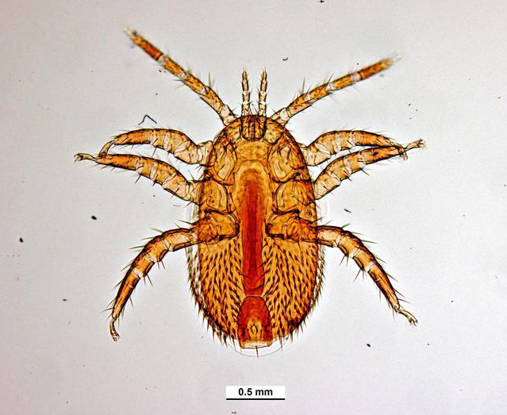
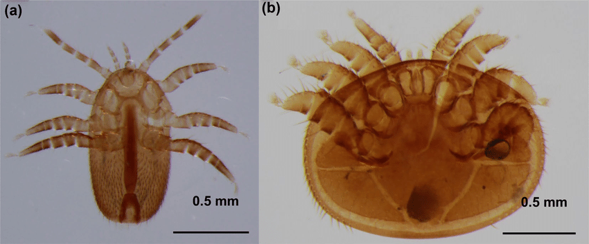

Overview

Tropilælaps Mite
Image courtesy EntomologyToday.org
Tropilælaps is a mite which has not arrived in North America yet; however it is on the horizon. Some great scientists are working to get ahead of this to minimize the impact to our bees when they do get here.
You are advised to stay abreast of this so you are ready for the impact when it happens. The American Bee Journal and Bee Culture magazines are great ways to do that, as well as to stay informed on other aspects of beekeeping.

Tropilaelaps vs. Varroa Mites
Image courtesy ResearchGate.net
More Information
Published Articles
- Tropilaelaps: Is this mite really going to be worse than Varroa? Yes and no. by Conrad, Ross. Bee Culture magazine, April 2023.
- Tropilaelaps, Part 2 by Conrad, Ross. Bee Culture magazine, May 2023.
Web Sites
- Tropilaelaps, from the University of Florida
- Tropilaelaps, Wikipedia link